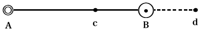

………………………………………
一、訳者の「解説」の一部分は、Buek 上記の校訂版（Philosophische Bibliothek 新版 Metaphysische Anfangsgr
 nde der Naturwissenschaft, 1786）に於て与えている序言から教えられたものであり、他の一部分はクーノー・フィッシャーの叙述に負うている。そして更に他の一部分は、其の他の人々の影響の下に立つ訳者の主観的な又暫定的な解釈に過ぎない。不当なそして又恐らく不充分な先導によって読者への礼を失うことがありはしないかを恐れる。読者は他の多くの場合に於てと略々同じく、今の場合に於ても亦、「解説」に依頼するべきではないであろう。
nde der Naturwissenschaft, 1786）に於て与えている序言から教えられたものであり、他の一部分はクーノー・フィッシャーの叙述に負うている。そして更に他の一部分は、其の他の人々の影響の下に立つ訳者の主観的な又暫定的な解釈に過ぎない。不当なそして又恐らく不充分な先導によって読者への礼を失うことがありはしないかを恐れる。読者は他の多くの場合に於てと略々同じく、今の場合に於ても亦、「解説」に依頼するべきではないであろう。一九二八・七
東京にて
戸坂潤
［＃改段］『自然科学の形而上学的原理』は『一般自然史及び天体論』と比較される時、その根本的特徴が明らかとなるであろう。前者と後者とはカントが自然乃至自然科学に関して著した書物の内、その中心的な意味に於て、その独創に於て、従って又その後世に与え又与えるべきであった影響に於て、双璧をなすものと云ってよい。後者は創見ある有名な仮説（カント・ラプラスの星雲説）に立脚して自然の終局の根柢を説明しようと企てた点に於て、一面純粋に自然科学的であると共に、他面之を哲学上の労作と見做すならば、それは批判期前の特色を有つと考えられなければならない（初版は一七五五年に出ている、そしてカント学者は一七七〇年を以て前批判期と後批判期とを分つのが常である）。之に反してわが著作は年代から云っても全く批判を通過した思想の成熟を示すものである。一七八一年の『純粋理性批判』の新しき哲学法は一切の文化領域に対して基礎を与えることを以てその任務とする、そしてかかる任務は『プロレゴーメナ』によって見誤る余地もなく繰り返えして主張された（一七八三年）。それ故自然乃至自然科学も亦そのような批判的基礎をカントから受けとらねばならぬ。『実践理性批判』に先立つこと二年、『判断力批判』に先立つこと四年、即ちカントの著作期の絶頂に算入すべき一七八六年にこの約束が果された。それがこの著作の初版である。晩年の未完成品『自然科学の形而上学的原理から物理学への推移』を除くならば、之はカントの自然哲学上の注目すべき作品の殆んど最後に位いするものである。
この書物がこのようにして明らかな批判的特色を有つにも拘らずこの書物の計画は前批判期の久しい前から之を発見することが出来る。この萌芽を宿す前批判期の自然科学的・乃至・自然哲学的な多くの著述の内でも、特に『活力の真の計算に就いての考察』（一七四六年）、『物理的単子論』（一七五六年）及び『運動と静止との新説』（一七五八年）の三者は、その問題から見てもその取り扱いの精神から見ても、殆んどこの著作の断片的前身でなければならない。そればかりではなくカントはランベルトへの手紙（一七六五年）に於て次の意味のことを語っている。「私の仕事は主として形而上学の特有な方法を、又それを介して全哲学の夫を目的としている。次の復活祭までにはその仕事が出来上るであろうと云った私の言葉を聴いて、カンテル氏は本屋らしくもこの書物の名を（多少は違っていたが）すでにライプチッヒ書籍市場の目録に載せている。併し私は初めの企てからは今では非常に離れているのでしばらくこの仕事は延期しようと思う。その代り、私は一二のもっと小さい完成品をまず書くことにした。それならば材料がすでに揃っているのである。即ち自然的世界知の形而上学的原理と実践的世界知の夫である。かくすれば目的の主著は過多にして而も不充分なる事例のために膨大となり過ぎるのを免れることが出来るであろう」、と。それ故この年にはすでにわが著作の「材料が揃って」いたのであって、ただ問題はそれを書き下すか否かにしかないように見える。処がかの重大なる就職論文（一七七〇年）を以て始まる批判主義の自覚はこの計画を再び延期するのを余儀なくしたのであろう。ランベルトへの手紙から正に二十年にして始めてカントは吾々の問題に立ち帰って来る。一七八五年九月十三日にシュッツへ与えた手紙に於て彼は、二十年以前の計画を再びそのままとりあげている、吾々はその一貫不易な計画をば一種の驚きを以て眺める外はない。「私は約束の自然の形而上学に至る前に先ず、その単なる応用ではあるが併し経験的概念を予想する処のもの、即ち物体論の形而上学的原理、並びに之に付録して精神論のそれ＊、を片付けて了わねばならなかった。……私は之を自然科学の形而上学的原理の名の下にこの夏脱稿した。……もし私が右手を傷めなかったならばミカエル祭（九月二十九日）には出版出来た処であるが、それのために後の方は書くのが遅れたのである。それで原稿はきっと復活祭（翌三月）まで手許に置かねばならぬであろう」。その後しばらくして出版者ハルトクノッホはカントに次の手紙を贈っている。「貴下が初めの決心通り、脱稿したその論文はハルレのグルネルト氏の許へ送られた方が好かったと思う。成程氏はプロレゴーメナでも道徳の形而上学でも貴下を永く待たせはしたが、私の注意もあるので今度はそのようなことはあるまいと思う。……けれども貴下は初めの考えを変更されたのであるが、その著作をば新年にはグルネルト氏へ貴下が送られることを私は伏してお願いする。そうすれば復活祭に間に合うように出版出来るであろう。もし貴下が要求されるならば出版の時期をもっと早めることも出来る、」と。カントがこの年（一七八五年）の暮に至るまで訂正を続けていたことは、ウルリツィ教授の著書に対する十二月十三日の日付を有つ批評に就いて、彼が脚注を加えている処から見て明らかである。リガに於てハルトクノッホによって出版されたのが翌一七八六年であることは前に述べた。
＊ 之は『自然科学の形而上学的原理』の付録としては付いていない。そして又遂に出版されずに終ったものである。
向にランベルトへの書簡に於て自然的世界知の形而上学的原理――これがわが著作に相当する――と並んで、実践的世界知の形而上学的原理が約束されていた。一七八五年の『道徳の形而上学への基礎』及び一七九七年の『道徳の形而上学』がそれに相当する。そして後者は「法律論の形而上学的原理」と「道徳論の形而上学的原理」との二部から成り立っているものである。この両部が正にわが著作と対応すべき姉妹篇であることはカントが自ら之を述べている（『法律論の形而上学的原理』緒言を見よ）。
第一批判によれば吾々の悟性を適当に使用し得る正当な範囲は感性的直観の世界の外にはない。そして悟性がそれ自身の形式として範疇を有つに対して、感性的直観はその形式として空間（並びに時間）を有つ。後者の形式がそれ自身一つの直観となる時（形式的直観）数学が成立し、後者の内容と前者とが（図式によって）結合する時経験が成立するのである。かかる経験界の対象を総括して自然と呼ぶならば、吾々が経験界の事物に関して有つ認識は即ち自然科学に外ならない。今自然科学の原理が経験によって始めて与えられる時、それは経験的と呼ばれ、之に反して経験に先立ってその条件として与えられるならば、それは先天的である。前者の原理が支配する範囲を経験的自然科学、後者の原理が支配する範囲を純粋（又は合理的）自然科学という。純粋自然科学とは即ち自然に関して単なる理性に由来する認識の凡てを意味する。それは経験的直観の内容、所与、からの独立を意味する。処が向に述べた如く数学も亦恰もかかる独立の上に成立する。それ故科学の理想が、純粋であること、先天的であること、に存するならば、数学がその内に発見されるだけそれだけ自然論は真の科学となるわけである。けれども純粋自然科学は決して直ちに数学と同一ではない。後者はただ直観（形式的直観）に由来する筈であったのに反して、前者は自然に関して理性（悟性）に由来するものであった。そして後者が物の本質に関するに反して、前者は物の存在に関する。処がかかる存在は数学的に構成することは出来ない、理性によって思惟され且つ概念によって認識されるものでなければならない。それ故かかる存在に係らずにはいられない純粋自然科学は、この意味に於ては、単に数学的ではなくして、正に哲学的乃至形而上学的である。それは自然の形而上学である。そしてこの形而上学の発端となるものが『自然科学の形而上学的原理』に外ならない。
吾々は已に経験界の対象を総括して自然と呼んだが、経験界の対象は外的直観に基くか又は内的直観に基くかでなければならない。前者に関する認識は物体論即ち物理学であり、後者に関する認識は心理学である。処が合理的（純粋）心理学はカントが説く処に従えば不可能である。故に純粋自然科学はただ純粋なる物体論、即ち形而上学的物体論だけとならねばならぬ。経験的物体論としての（否それは実験論とすら云うことは出来ない）化学、又経験的でしかあり得ない心理学、は形而上学的物体論と同じ位階に並ぶことは出来ない。その何れにも数学が応用され得ないからである。そしてかく云われるのもカント時代の化学と心理学との状態を以てすれば已むを得なかったことであろう。
さてすでに明らかとなっている通り、カントの自然哲学は物の存在を予想していた筈である。空間内に於ける存在、即ち物体界の恒存者なる実体は物質である。それ故第一に自然の形而上学の問題は、物質に就いて純粋悟性を通じて認識し得るものは何であるか、である。処が物質はただその表われ方現象の仕方に於て認識されるの外はない、そして現象とは実体の変容である。然るに実体は物質であった。それ故現象は物質の変容、即ち物質の変化、即ち運動でなければならない。運動とは物質の働き方の現象に外ならないであろう。そこで第二に自然哲学は純粋なる運動論とならなければならぬ。言葉を換えて云うならばそれは、運動に就いて純粋悟性を通じて何を認識し得るか、を課題とするものである。
然るに第一批判に於て決定されたことに従えば、この純粋悟性は分量・性質・関係・様相の四範疇であった。それ故物質・運動の形而上学はおのずから之に相当して四部門に分たれる。第一部運動論は分量としての運動を取り扱う。この場合物質の内部的変化或いは物質が物体として働く時の変化は之を捨象するから、物質は数学的点として表象されてもよい。従って運動は数学に於てと同じく構成され得るものである。第二部動力学は運動を性質として取り扱う。というのは運動は物質に固有なる性質として表象されるのである。第三部力学は物体と物体との間の関係としての運動を取り扱う。そして最後に現象学は運動が経験の対象である限りその現象の仕方即ち三つの様相に従って、可能的、現実的、必然的の三つに分類される。かくて本文の根本概念は物質・運動の外にはない、それは物質の理論乃至運動の理論と云って差閊えはないであろう。カントはすでに略々三十年以前『運動と静止との新説』に於て一切の運動と静止とは相対的でなければならない所以を説いている。そしてその思想はまたそのまま本文に於て運動（並びに静止）の根本性質を決定しているものに外ならない。一切の運動は相対的である。
運動の主体は物質である、空間内に於て物体が単なる数学的点から区別される或るものである。それ故物質は「空間に於ける運動するもの」とまず考えられるであろう。今仮にその質量を捨象し従ってこの物質を数学的一点と見做すならば（質点という今日の言葉を連想してよいであろう）、運動はただ方向と速度とを有つ空間乃至時間の量となる。運動をかくの如き量としてのみ見做す物体論が運動学である。
運動はまず回転と移動とに分けられ、後者は又直線運動と曲線運動とに分れる。
曲線運動は更に回帰運動か否かであり、且つ前者は円運動か又は振動である。併し運動学に於ては物質は数学的点と考え得るのであるから、云うまでもなく移動以外に運動はなく、その最も簡単なる場合は直線運動である。
物体が運動するとは空間に於ける位置を変えることに外ならないが、位置の変化を認識し得るのは外的物体に対する関係の変化によるの外はない。この外的物体が占める空間（それは云うまでもなく知覚し得るものである）は物質的で経験的であると共に、それは最初の物体に対する関係の一項であるから相対的でなければならぬ。そして他項に相当する最初の物体が運動し得るが故にこの項も亦運動し得る空間である。之に反してかかる相対空間の総てを含みこれがその内に於て始めて運動し得るものとなるような空間は絶対空間である。之は知覚され得ず又運動し得ない無限の空間でなければならぬ。
さて一般に吾々は一点Ａの同一運動現象をば、Ａが運動し相対空間が静止している、と表象することも出来るし、Ａは静止し之に反して相対空間が反対の方向に運動している、と表象することも出来る。之は運動静止の相対性そのものである。吾々はこの関係を用いて始めて運動の合成を構成することが出来るであろう。運動の合成こそ運動学の課題である。今直線運動の合成には三つの場合が考えられ得る。第一、同一直線上同一方向の二運動、第二、同一直線上相反する方向の二運動、第三、異なれる直線上の二運動。同一点が同時に二運動をなすと考えるべきこれ等の運動合成をば、幾何学的に構成する（構成は数学に固有であり従って物質を数学点と見做す運動学には本質的である）こと、即ちそれを直観し得るように表現することが、今の問題である。処が、吾々は同一の量が同時に異れる二つの運動をすることは決して直接に直観出来ない。併し之に反して二運動が二つの量に同時に起こるのを直観することは可能である。であるから吾々は一つの量に於て同時に起こる二運動をば、その現象を少しも変えることなくしてその儘、二つの量に於て二運動が起こるものと改釈する必要に逼られる。そして此の必要を充たすものは正に初めに指摘しておいた通り、相対空間の導入によって与えられているのである。即ち吾々は一点が甲の運動をなすと共に乙の運動をなすと表象する代りに（それは述べた通り不可能である）、一点が甲運動をなし同時に甲の占めている相対空間が乙運動と方向が相反し且つ乙運動と同等な丙運動をなすと表象することによって、一般に運動の合成を得ることが出来るのである。この表象法によって始めて運動の合成は、直線の和（第一の場合）として、或いは直線の差（第二の場合）として、又二直線を異れる二辺とする平行四辺形の対角線（第三の場合）として、幾何学的に構成され得るのである。
運動学の課題はかくして――相対空間の導入によって――解かれる。そしてこの解決を可能ならしめた根本的根拠は、この相対空間の導入によって云い表わされた運動並びに静止の相対性に外ならない。運動（静止）の相対性は本文を一貫して徹底した思想であり、すでに『運動と静止との新説』に於て主張されていることは述べた。素よりカントは之に対して積極的な証明を与えてはいない、カントによれば之は一つの「公理」である。蓋しそれは証明を要求するには余りに明白、当然であることを人々は認めるであろう。この明白さ当然さに如何なる認識論上の理由があるかは問わないとして、少くとも之を否定する根拠は先験的には何処にも発見出来ないと共に、経験的にもこの立場が積極的に主張され得るということ、即ちこの先験的予想を実験的な検証によって正当として解釈出来るということ、之は最近の物理学の基礎的研究が得た事実上の結果である。
運動学に於ては物質は数学的点と考えられることが出来た。というのは物質をば一応は運動の主体とは考えたにしても、まだその運動を所有するもの或いはそれを惹き起こすものとは考えていなかったからである。今も物質は運動の原因でなければならぬ、そしてそれは動力学へ移り行くことである。
物質は空間から区別されねばならぬ。運動学に於ては物質は単なる数学的点として、即ち空間的な一点として取り扱うことも許された。併し物理的な物体は――そしてそれこそ物質の意味である――もとよりかかる空間点ではない。空間それ自身は虚である、そして物質は空間の内に存し且つ之とは異ったものであることが必要である。故に物質は空間の充実に外ならない。物質とは空間を占める或るものの謂である。
物質をして空間を充実せしめるその条件は何か。今物質の外から或る運動が及んで来たとする時、もし物質が何等の抵抗もなし得ないならば、その運動は物質を消滅せしめて了う、即ちそれを侵透して了うであろう。それ故物質が空間を充実し得るための唯一の条件は外部から侵入する運動に対する抵抗でなければならぬ、即ちこの運動を消滅せしめ又は減少せしめ得るものでなければならぬ。処が或る運動が消滅し又は減少するのはただ反対の方向に於てのみのことである。それ故物質の抵抗は、この運動と方向の反対な或る一つの運動でなければならない。即ち物質はかかる運動をなし得るもの、運動の原因、一つの力（運動力）である。かくて物質概念の新しく発見された規定として力が見出された。
運動力は接近する力か遠ざかる力かである。前者を引く力、引力、又は牽引、後者を推す力、斥力、又は反発力と呼ぶ。それ故物質にはこの二つの力が考え得られるであろう。そしてまず斥力は物質にとって必然的である。何となれば之なくしては物質は空間を充実することは出来ないから。物質の各部分はこの斥力によって運動せしめられるのである。
物質の反発力は又延長力である。この延長力を弾性と呼ぶ。この弾性は物質の必然的条件であり根源的性質であるから特に根源的弾性と名づける、根源的でない弾性に就いては後に述べよう。
力は凡て内包量である、即ち度を有つ。反発力は一定の度を有たねばならぬ。何となればもしその度が無限大ならば反発力は限りなき処にまで作用しなければならない、即ち有限な時間の内に無限な空間を充たさねばならぬであろう。又もしその度が無限小であるならば反発力は最小の空間と雖も充たすことは出来ない筈である。故に反発力は一定の度を有つ。さて一旦反発力が無限大でないことが決定された以上、之に打ち勝つ他の力が常に可能であるであろう。反発力はこの力によってその度を減少され得ることとなる。即ち空間の充実はそれだけ制限され得る。物質は圧縮される。この時かの他の力（それも反発力である、何となれば今の処反発力のみが必然的であったから）は圧縮力である。もし圧縮力がなかったとすれば物質がその空間の充実を制限されることもあり得ない、そうすれば物質は絶対に不可侵透的となる、かかることは不可能である。又圧縮力は今の場合反発力であり従って一定の度を有つ筈であったからして無限大ではあり得ない。故に物質は絶対に侵透されて了うことも不可能である。物質は絶対的に不可侵透的でもなければ絶対的に侵透されて了うこともない、それは相対的不可侵透性を有つ。それは数学的（絶対的）ではなくして動力学的（相対的）な不可侵透性である。
かくの如く物質は運動力それ自身であるから、それは又運動の主体、実体である。そしてこの実体は延長せる実体であるから分割されることが出来る。物質は部分を有つ、而もその部分はすでに述べた処に従って各々反発力を有つ、物質の部分は運動し得るものである。物質の部分はこの運動によって他の部分から離れることが出来る。かくの如く物理的に分割されることをば分離と名づける。
物質は無限に分割出来るか。古代の形而上学者の或者は空間の無限可分割性を否定して云う。もし無限に分割し得るとすれば無限の部分がなければならぬ、吾々は無論無限の部分を全体として考えることは出来ない、それが出来なければこそ無限と云うのである。然るに一方に於て無限の部分の凡ては初めから一つの全体と考えられていた。之は矛盾である。故に無限の分割は不可能であると。このゼノンの詭弁をカントは次の如くにして始めて解いた。もし形而上学者に従って空間をば物そのものの性質と考えるならば、無限可分割性を許すことは、空間的な物が無限の部分からなることを許すこととなり、之が一つの全体をなすという点に於て今の矛盾が発見されるのであるが、之に反してもし空間を物そのものの性質と考えないならばこの矛盾は生じては来ない。吾々の問題は、それ故無限可分割性を否定するか、それとも之を肯定せんがために、空間を物そのものの性質でないとするか、の一つを選ぶにある。吾々は無論幾何学者と共に空間の無限可分割性を承認しなければならない――その根拠は第一批判の感性論に於て与えられている。故に寧ろ吾々は空間が物自体の性質ではなくして、現象を成立せしめる条件となる処の単なる表象であることを承認すべきである。空間の分割はかかる思考に於ける分割の過程を意味するのであって、空間が部分から成立していることを意味するのではないから、従ってこの過程を無限に追うことによって無限の分割が可能なのである。もしこの事情を忘れるならば吾々は忽ち二律背反に陥るの外はない――それは第一批判の弁証論に説かれている。さて空間が無限に分割出来るとすれば、空間を占めている筈であった物質に就いても無限可分割性が肯定されることとなる。
物質にとって反発力が必然的であることは向に述べたが、もし之が唯一の力であるならば、物質の部分は限りなく相互に離れ去って行く筈であって、それを阻止する何物もないからして、物質は消滅して空間は虚となる外はないであろう。即ち反発力のみによっては物質は空間を充実することは出来ない――従って物質は無となる。故に物質には反発力以外の力が必要でなければならない。而もその力は物質を圧縮するものである外はない。それは圧縮力として働くものである。処がかかる圧縮力は、この物質そのものの内にあるかそれともそれ以外にあるかである。それ以外とは他物質か虚空間かであるが、虚空間は力を有つことは出来ない。もし又他物質がこの圧縮力を加えるのであるとすれば、その圧縮力は他物質の反発力に外ならないが、かかる反発力だけでは他物質そのものが消滅しなければならない理由を今述べた処である。故にこの圧縮力は初めの物質そのものの内にある外はない。この力が正に引力である。
引力は斥力（反発力）からは導き出すことが出来ない。何となればそれは却って斥力を制限する他の力であったからである。それ故引力も亦斥力と同じく物質の必然的条件でなければならない。かくて斥力と引力とは物質の必然的条件、その根源的運動力であることが明らかとなる。それ故吾々は両者の力の内何れを先とすることも、力そのものの必然性・根源性から云って、出来ない筈である。併し斥力は物質の最初にしても最も手近かな現象形式でなければならない。何となれば、吾々が物質を知覚する時、夫は必ず抵抗として、圧迫及び衝撃として、即ち反発するものとして与えられているからである。それ故斥力は引力に先立って取り扱われるのが順序である、けれども之は引力が斥力に較べて二次的であるからでは決してない。
物質乃至物体間の相互の作用は運動力の性質によって其の仕方を異にする。この作用は接触を介して始めて作用するか、又は接触を俟たずに作用し得るか、である。物理的な意味に於ける接触とは不可侵透性の直接なる作用及び反作用を云う、即ち二物質に共通なる限界に於ける直接なる交互作用の謂である。故に接触に於ては物質は互いに却斥する外はあり得ない。斥力は接触に俟つ。もし物質がかかる接触を待たずに作用するならば之を遠隔作用と呼ぶ（二物質の外に遠隔作用を媒介する他物質がない時即ち虚空間だけであるならば、それは直接なる遠隔作用である）。さて遠隔作用は斥力であることは出来ない。何となれば斥力は接触に俟つのであったからである。故にもし遠隔作用があるとすればそれは引力に於てしかあり得ないわけである。又、接触に於ては却斥しかあり得ないからして引力は接触に於て作用することは出来ない、故にもし引力があるとすればそれは遠隔作用の外にはあり得ない。故に引力は先ず遠隔作用である。処が凡ての接近現象は必ずしも真の牽引ではない。例えば第三の物体の衝撃によって二物体が接近するならばそれは外見上の牽引に過ぎない。何となればこの接近現象は第三の物体の反発力（斥力）によるものであって何等の引力によるものでもないからである。故に第三の物体を媒介とする牽引は単に外見上のものにすぎない。故に真の牽引は第三の物体を媒介としない遠隔作用、即ち直接なる遠隔作用でなければならぬ。即ち凡ゆる物質に本質的なる牽引は虚空間を通じての直接なる作用である。もし牽引が直接なる遠隔作用であることを否定する人々があるとすれば彼等は同時に牽引そのものを否定しなければならぬであろう。接触は物体の存在を即ち物質を予想し、物質は根源的牽引に基く。即ち接触は牽引に基くが、牽引が接触に基くのではない。今牽引が接触に基かないとすれば従ってそれは空間の充実にも基かない。即ち牽引は虚空間を通じて作用し得るのでなければならぬ。ニュートンの万有引力説はカントによればこの理由に基いて直接なる遠隔作用としての引力を説くものでなくてはならない。
斥力は物体の共通なる限界、即ち表面、に於て作用するから、之を表面力と呼び、之に反して引力は表面を越えて作用し入るからして侵透力と呼ばれる。
物質の各部分は他物質の各部分を牽引する。それ故部分が多ければ多い程引力は強くなくてはならぬ。部分の集合を物質量と名づければ引力は物質量（質量）に比例するものである。又大なる物体の方が小なる物体の方を牽引して之を自身へ近づかしめるものと考えられる、物体の接近は質量に反比例する。さてかくの如き牽引は一切の物質の有つ性質でなくてはならない。この性質を万有引力と云う。物質は万有引力のより大きい方の物質に牽引されて運動しようとする。この傾向を重量と呼ぶ。重量は恰も弾性が反発の直接な作用であったと並行して牽引の直接な作用に外ならない。
牽引は一点から凡ゆる距離に作用するから、それは云わば球面をなして伝播するであろう。即ち牽引の度は距離の二乗に反比例するものと考えられる。之に反して反発は、無限小の距離に於て（接触に於て）作用し、而も物体の充実がその性質であったから、反発の度は無限小の距離の三乗（之は物体の有つ次元である）に比例するであろう。但しかかる法則は物理学に於て経験的に決定されるべきものであって形而上学に於て先天的に確定することは出来ない、形而上学はかかる規定に就いて責を負うことはしないであろう。
斥力と引力とは物質の根本的性質であった。吾々が物質に就いて知っているその他の諸性質は凡てこれ等二つの性質から導き出されたものに外ならない。素よりかかる諸性質は物質なる概念を可能ならしめるという意味に於ては先天的ではあり得ない、それは経験的である。すでに物質なる概念そのものが経験的ではあるが、一旦かかる物質を許した以上その成立の条件となる斥力並びに引力はそれを可能ならしめるという意味に於て先天的であった。導き出された諸性質は之ではないという意味に於て特に経験的である。故に次の問題は経験上の議論に外ならない。元来形而上学は之に対してその必然性を保証しようとは思わない、ただその可能性を指摘するに止まるのである。
物質は斥力によって空間を充実する、斥力は一定の度を有っていた。故に今この一定度の空間の充実を密度と呼ぶならば、同一の空間量は種々なる密度の物質によって完全に充実されるものと考えることが出来る。この空間量の内部に於て密度の差を説明するために間隙の虚空間を仮定する必要はないであろう。そうとすれば物質は連続をなすものである。
物質の部分はかく互いに連結しているが、かかる連結を成り立たせるものは明らかに引力に外ならない。もし引力が部分を連結しているならば、引力は接触に於て付着の働きをしているものである。処が部分は運動し得る筈であったからこの接触乃至付着も変化し得るものでなくてはならぬ。この変化は部分の交易かさもなければ接触そのものの消滅である。前の場合にあっては、部分は交易し移動しても、接触そのものは保たれるのであるからして、接触の量は全体としては減じないが、後の場合であるとすれば、部分は分離し付着は減じる。分離に抵抗する力は付着力であり、移動に抵抗するものは摩擦である。
如何なる物質も一定の付着力を持つが、摩擦を有たぬ物質は可能である。即ち付着を減じることなくして部分が絶対的に移動し得る物質――流体がある。之に対して部分が付着を減じることなくしては移動し得ない物質即ち摩擦を有するものは固体である。流体と固体との区別を以上のようにして与えるならば、両者の区別を与えるものは普通考えられるとは異って、付着ではなくして正に摩擦である。流体は固体よりも付着が少いのではなくして付着の種類を異にしているのである、即ち摩擦がないのに過ぎない。外部の空間に触れる部分が小さければ小さい程物質部分間の付着の面は大きい筈であるが、恰も流体なる水滴は外部の空間に触れる部分を最小ならしめる――球面――性質を有つのであるから付着は大きくある筈である。付着の小さいことが流体の特徴であるならば水は流体とは呼べなくなるであろう。又もし水に少しでも摩擦があると仮定すれば馬蹄型管に注がれた二つの水柱の表面は、注ぎ足された方が高くなるであろう、然るに之は事実に反している。故に水は摩擦を持たぬものと考えられねばならぬ。かくて流体は付着の小さい物質ではなくして実は摩擦の無い物質、即ち部分が絶対的に移動し得る物質の謂でなければならぬ。之を承認しない限り流体動力学の法則は成立しないであろう。
斥力によって一定の空間の充実――物質の体積――が可能であり、引力によって物質の付着が可能である。さて物質の体積の変化は物質の付着・連続によって始めて考え得られるのであるが、かかる体積の変化は物質固有の力に抵抗するものでなければならない。即ち物質はこの場合その体積の変化を回復することを努力するものである。之を弾性と云う。但し之は已に述べた根源的弾性とは区別されねばならない。根源的弾性は直接に反発力そのものに由来し従って物質の先天的規定であった、之に反して今の場合の弾性は根本力・体積・付着などに制約されて導き出された物質の経験的性質にすぎないからである。
物質が他物質の影響を受けてその部分の結合を変えるとすれば、それは他物質が外的に運動を加えてこの変化を惹き起こすのであるか、それともそのような強力を加えずしてこの変化を及ぼすかである。第一の場合は力学的変化、第二の場合は化学的変化である。化学的変化にあっても結合していた部分は分離する。之を溶解という。一物質の部分が他物質の部分と結合した後、再び分れることを分析という。化学的変化とは溶解と分析とに外ならない。今ＡとＢとが溶解してＣとなる時、Ｃの各部分に於てＡとＢとが一定の割合を占めているならば、それは絶対的溶解である。その場合Ｃの各部分の体積はＡとＢによって同時に充実されているであろう。故にＡとＢとの結合は一つの侵透でなければならない。之は化学的侵透である（力学的侵透と之とを区別せよ）。それが経験的に成立するか否かは言明の限りではないが、少くとも化学的侵透は考え得られることであろう。
化学的変化は力学的に説明されることは不可能である。何となれば溶解に於てもしＡとＢとが外的に結び付くのであるならば、ＡはただＢの存在しない場所を占めることが出来るだけであって、Ｃの全体を占めることは出来ず、即ち完全なる溶解は不可能となるであろう。故に化学的変化は動力学的に説明されることの外はない。一般にもし力学的・数学的説明法をとるならば、例えば密度の差を説明するのに間隙の虚空間を仮定しなければならなくなるであろう。之は正に力学的自然哲学、デモクリトスの原子説乃至デカルトの微粒子説に外ならぬ。固より吾々は経験の範囲に属する筈のこの種類の考え方が不可能であることを先天的に証明出来るとは思わない。けれども少くとも之が必然的でないことだけは主張出来よう。カントは之に代るものとして動力学的・形而上学的説明法を採用するのである。
一物体が他物体を牽引し又は反発することに於て運動の分与が成り立つ。運動の分与と付与とは区別される必要がある。運動付与の力は物質に根源的であり、運動分与の力はそれから導き出されたものであって、前者は動力学の対象であり、後者が始めて力学の対象である。さて牽引による運動の分与と反発によるそれとはただその方向を異にするだけであるから、吾々は反発による場合を述べることによって一般に及ぼすことが出来るであろう。反発に於ける運動の分与は圧迫と衝撃でなければならない。
運動が分与されることは運動する一物体が他物体に及ぼす作用の結果である。この結果を惹き起こす作用因は運動物体の力でなければならない。処でこの力は物体の量と運動の量の二つの因子から成り立つ筈である。物体の量とは運動する物質部分の集合（質量）、運動の量とは速度に外ならない。故に質量と速度とは運動物体の有つ力の二つの因子であり、従ってこの物体の全体の運動量は質量と速度との積である。故に種々なる物体の質量を測定するには一定の速度に於ける各物体の運動の量を測定すればよいわけである。
かくて力学は一物体が運動によって他物体に分与する処の変化をその対象とする。この場合物質は第一にかかる変化の主体と考えられる、即ちそれは運動の実体としてまず考えられる。第二にそれはかかる変化の原因と見做される。第三に物質は他物体に運動を分与すると共に又他物体から運動を分与される一つの物体と考えられねばならぬ、即ち運動の交互作用が考えられねばならない。故に力学はその対象をこの三つの視点に於て取り扱うことが必要である。処が之は已に第一批判に於て、関係の三つの範疇に従って三つの「経験の比論」として先験的に掲げられてあったものに外ならない。吾々はかかる先験的な規定を運動という経験的な概念に応用することによって、力学的物体論を組織するまでである。何となれば一般形而上学の原則――「経験の比論」はそれに属する――を物体的自然に応用することに於て、経験的ではないが併し経験的概念がその根柢に横たわっていなければならぬ筈の、純粋の物体的自然論が成り立つ筈であったからである。
物体的自然の変化、それが運動である。この変化の主体、その実体が物質である。そこで一切の物体的自然の変化に於て物質量は全体として増減することなく不変でなければならない。何となれば、一般に形而上学に於ける実体の特徴はその恒存性の外にはないが、恒存が事実上認識されうるのは又、ただ空間に於てのみである。空間に於けるこの恒存者こそ物質である。処が一般に恒存者はその性質そのものからして生起消滅が不可能な筈である。それ故物質の生起消滅は不可能でなければならない。尤も物質には無限の部分があり、各部分は運動力を以て運動し得る筈であったからして、物質部分の分離は常に起こり得ることである、けれども之は決して消滅ではない。即ち物質量は全体として増減することなくして不変でなければならない。之が力学の第一法則である（恒存者が認識され得るのはただ空間に於てのみであった。言葉を換えて云うならば、ただ外延量としてのみであった――外延量とは部分が互いに外にある量である。処が精神乃至意識はこのような外延量ではない、その部分は互いに外にあるのではない、それは正に之とは反対に内包量でなければならない。それ故精神や意識は往々にして信じられるように之を実体と考えてはならないものである、従って茲にはその恒存性を口にすることは出来ない。所謂合理的心理学は不可能である）。
一切の変化は原因を有っていなければならない。故に亦物質に於てもそうなければならない。処が物質の変化は運動であるが、物質は部分が互いに外にある筈であったからして、この変化の原因も亦外的である。故に物質の変化は凡て外的原因を持たねばならぬ。之が力学の第二法則である。
さて物質の変化は運動又は静止に於て成立する。それ故もし物質が静止していたのならば之を運動せしめるには外的原因が必要であり、もし物質が運動していたのならば之を静止せしめるには又外的原因が必要である。もし外的原因が加わらなければ物質はそのままの速度と方向を以て運動し続けるであろう。それ故吾々は前の法則を次のように云い表わすことも出来る。物質は外部からその状態を変えるべく強いられない限り、従前の状態を維持する、と。この形に於ける法則を惰性の法則と呼ぶ。
物質の凡ての変化は外的原因を有つのであったが、之を云い換えれば、如何なる物質の変化も内的原因は之を有たない、ということとなる。もし内的原因を有つとすれば、内的な努力を有つことになるから、物質は活きていなくてはならないであろう。もし活きているとすれば欲求・欲望・表象等を有つであろう。併しそれは外的直観の対象となることは出来ない。処が物質は正にそのような外的直観の対象でなければならなかった筈である。故に物質を吾々が今取り扱っている学問上の意味に於て理解する限り、それは無生命なのである。惰性の法則とはこの無生命を云い表わす法則に外ならない。それ故惰性はその状態を維持しようとする努力を意味することは出来ない。この意味に於て惰力という概念も正しくないであろう。凡てかくの如き物活論的な見方は正に自然哲学の死の外の何物でもない。又之と並行して、もし物質が内的原因を有つことが出来ないならば、物質を目的に従って働くものと考えてはならないことも明らかである。物質は決して目的因を持つものではない。自然論に於ては目的論は許されない。茲に於て許される唯一の正当な見方は物活論でもなく目的論でもなくして、正に力学的な因果関係の適用だけでなければならない。
物質の変化は凡て外的原因を有つことが已に述べられたが、そうすれば一物体が運動を変化するのは他物体によってその運動の変化を作用されたのでなければならない筈である。即ち二つの物体が同時にそこになければならない。故に形而上学の共在の原則に従って、両物体は交互作用に於てなければならない。即ち運動せしめられた物体は又これを運動せしめた物体に作用し返すこととなる。かかる交互作用は運動せしめられた物体の反作用となって現われる。一物体が他物体によって衝撃されれば一物体は他物体を衝撃し返し（反衝撃）、他物体によって圧せられれば他物体を圧し返し（反圧迫）、他物体によって牽引されれば他物体を牽引し返す（反牽制）。故に一般に、作用と反作用とは常に等しい。之が力学の第三法則である。
この法則は物体論に普遍的に且つ必然的に妥当する先天的自然法則である。然るにカントによれば自然科学者達は之を説明するのに道を謬って来たものである。ニュートンは之を原理から基けることをせずして却って経験に訴えた。又ケプラーは之を説明して、凡ゆる物体が他から之に加えられる運動に抵抗する力を有つものとし、この力を惰力と呼んだ。併しながらこの概念が惰性という概念そのものに矛盾する所以は吾々が已に述べた処である。繰り返して云えば惰性は抵抗を与えるような力ではなくして却って物質の無生命を云い表わす概念であった。そして惰性は力学の第三法則に相当するのではなく第二法則の内容を云い表わす筈であった。また他の人々は運動の交互の分与をば、恰も水が瓶から瓶へ注がれるように、一物体の運動が他物体へ移行することであるとし、他物体に分与しただけの運動が一物体から失われるのであると考えた。けれどもこのような考え方は事実の記述ではあるかも知れないが、事実の説明にはならないであろう。
吾々は作用反作用のこの事実を如何にして説明すべきであるか。今述べたようにそれを経験に訴えて説明することは誤っている。吾々は先天的に之を説明し得なければならない。それ故之は運動の原理からして基けられるべきである。さてカントによれば運動は常に相対的でなければならない。即ち運動は交互的である。故に静止している物体に対して運動するということは、絶対的な意味に於ては、許されないことである。静止している物体に衝撃すると考えることは不可能である、何となれば衝撃すれば衝撃された物体は必ず衝撃し返すから、即ち運動するから、である。物体ＡＢ、及び両者が絶対空間に於ける関係、を考えて見れば、ＡがＢに接近するのも、ＢがＡに接近するのも全く一つである。それ故Ａが無限にＢに接近する――Ｂに衝撃すると見るのも、Ｂが無限にＡに接近する――Ａに衝撃すると見るのも、全く一つでなければならない。同様にして一般にＡがＢに対する作用はＢがＡに対する作用と全く同一でなければならない。即ち作用と反作用とは等しい。
運動学的な説明であるならば之で尽きるであろう。けれども力学にあっては運動の方向と速度の外に、物体の質量を考慮に入れねばならなかった。吾々は次に之を顧慮してこの作用の関係を構成しなければならない。

物体Ａが相対空間に於て静止している物体Ｂに向ってこの相対空間に干与してABなる速度を以て運動しているとせよ（上図参照）。ABを、質量Ａと質量Ｂとの比に反比例するように、AcとcBとに分けるとすれば、絶対空間に於けるＡの速度をこのAcとし、向の相対空間と共にＢが絶対空間に於て運動する速度をBcとしても、初めの現象に変りはない筈である。さてＡの運動量Ａ×AcはＢの運動量Ｂ×Bcと相等しく且つ運動の方向は相反するからして、ＡとＢとはｃに於て互いにその運動を阻止する、即ち絶対空間に於て両者とも静止する。然るにＢと共に運動して来た向の相対空間はそのままBcの方向に速度Bcを以て運動を続けている筈であるからして、ＡとＢとは［＃「ＡとＢとは」底本では「ＡととＢとは」］この相対空間に干与してはBdの方向に速度Bd（＝Bc）を以て運動していることになる。処がＢの方向及び速度Bcによる運動量、即ち方向Bdに於ける速度BdによるＢの運動量は、Ａの速度即ち方向Acによる運動量に等しい筈であった。故に衝撃に於てＢが受ける作用（運動Bd）即ちＡがＢに及ぼす作用は、Ｂの反作用（運動Bc）に等しい。之が要求されたる構成である。
吾々は更に反作用に就いてその運動が生じる時間を考慮に入れて見よう。反作用の運動が始まる瞬間を促動と呼ぶ。一旦始った運動はその速度をば時間の経過と共に増大するであろう。かく増大する速度を加速度能率と云う。如何なる物体も有限なる時間に有限なる運動しか出来ない、無限大の運動は不可能である。今もし物体が促動の瞬間（有限なる時間の経過の中にはそれの無限数が含まれている）に於て有限乃至一定の速度を得るならば、物体は一定の時間が経過する時、無限大の速度を得ることとなる。即ちもし促動が有限な速度を有つのならば加速度は無限大でなければならなくなる。之は不可能であった。故に加速度能率は無限小の速度しか含むことが出来ない。
促動の瞬間に於ては反圧迫の如きも無限小でなければならない。もしそうでなければ反圧迫は何時かは無限大となるであろうから。故に如何なる物体も促動の瞬間に一挙にして全抵抗力を発揮するのではなくしてただ無限小の抵抗を与えるに過ぎない。今もし絶対に固い物体即ち完全に不可侵透的な物体があるとすれば、そのような物体は如何に大なる外力に対しても初めからそれに等しいだけの一定度の有限な抵抗をするであろう。即ち有限なる時間の内には無限なる速度を以て延長しようとするであろう。之は今のことと矛盾する。故に絶対に固い物体なるものはあり得ない。
抵抗が瞬間に於ては無限小でなければならない以上、その抵抗に依存する物体の空間的関係の変化も瞬間的ではあり得ない。即ち物体は忽然として運動したり静止したり又運動を変えたりすることは出来ない。運動静止の変化は凡て連続的である。之を連続の力学的法則と呼ぶ。
すでに明らかであるように力学の三法則は関係の三範疇（実体、因果、共在）に対応する。従って又三つの経験の比論にも相当するものである。而も吾々が直ちに気付かずにはいられないように、之はニュートンの主著『自然哲学の数学的原理』の根本的な三法則（それは経験に基いた法則である）の先天的基礎でなければならない。
運動は、物質と同じく、外官の対象、即ち現象に外ならない。認識判断に様相上の区別があるに従って、認識の対象たるこの現象にも亦様相上の区別がある筈である。運動は可能的、現実的、必然的として現象するであろう。それでは運動は如何なる条件の下にこの三つの様相を具して現象するか。これが現象学の問題である。
一般に物体ＡＢの間に運動現象が行なわれつつある時、もしＡを運動すると考えるもＢを運動すると考えるも任意であるとすれば、この場合の判断は択一判断である。又もし之に反してＡが運動すると考えるか又はＢが運動すると考えるかが、ある一定の理由によって決定され得るならば、この場合の判断は選言判断である。又もしその何れでもなくして、ＡＢ共に運動していると考えねばならぬとすれば、この場合の判断は分配判断である。従って運動関係には択一的、選言的、分配的の三つの場合があるのである。第一の場合は、ＡＢ何れを運動していると考えるのも自由であるから、ＡもＢも同様に運動していると見られることが可能である、併しそれはただ可能であるに過ぎない。第二の場合にはＡＢの一方が現実に運動しており之に反して他方は運動していない、たとい他方が運動しているように見えたにしてもそれは仮象に過ぎないのである。第三の場合には、運動はＡＢ両物体に必然的に存しなければならぬ。運動の可能性、現実性、必然性の区別はかくの如くにして先ず与えられる。
第一に運動は一定の方向と一定の速度を以て行なわれる。もし他より加えられる運動変化の原因がなければ、運動は直線運動でしかあり得ない。直線運動にあっては已に述べて来たように、Ａが運動しＢが相対空間に於て静止していると表象するのも、之とは反対にＡが絶対空間に於て静止しＢが相対空間と一緒に前と反対の方向に運動すると表象するのも、全く同一の運動現象を云い表わす筈であったから、Ａに相対空間に於ける運動を与えるも、又は絶対空間に於ける静止を与えるも、吾々にとっては自由でなければならない。又同じことがＢに就いても云い得られる。故に直線運動は単に可能的である。次に直線運動は相対運動であるから、如何なる直線運動も絶対運動ではない。もし仮にそれが絶対運動であるとすれば、それは他物質又は他の相対空間への関係なくしてもそれ自身に在る処の運動でなければならぬ、即ち絶対空間に干与しての運動でなければならぬ筈である。けれども吾々は絶対空間を経験の対象とすることは出来ない。それ故経験判断に於て直線運動を絶対運動として述語することは不可能である。次に直線運動とは運動の外的原因が存在しない場合に外ならぬから、それは運動力を顧慮することなくして決定し得られるものである。然るに運動の運動力を顧慮しないということは正に運動の運動学的規定を取り扱うことに外ならなかった。故にこの場合に於ける運動の様相――可能性――は運動学に準じて決定されるとカントは云う。即ち運動を現象として論じる運動学の運動は可能的である。
第二に、物体が運動する時、惰性の法則から明らかであるように、自分でその方向を変化することはあり得ない。もし方向が変化するとすれば、そこには方向を変化せしめる外的原因がなければならぬ筈である。そして外的原因は運動力の外にはないから、そこに運動力の存在が証明されることになる。かかる運動力は云うまでもなく空間そのものにあることは出来ないから、この場合、この運動をば之と反対な相対空間の運動を以て置き換えることは不可能である。この運動と、この相対空間の反対の運動とは、斉しく可能であるのではない。と云うのは物体の運動は現実であり相対空間の夫は現実ではない。後者は経験ではなくして単に主観的な表象にすぎない、経験の統一から見て経験の対象とはなり得ないもの、仮象である。さて物体がその方向を連続的に変えながら運動するとすれば、それは曲線運動である。直線運動それ自身がすでに空間関係の連続的変化であるが、この直線運動の更に又連続的な変化である曲線運動は、空間関係の変化の変化に相当する。即ちそれは新しい運動が連続的に生起することを意味する。然るに如何なる運動も外的原因なくしては生起消滅し得なかった筈であるから、曲線運動には或る一定の外的原因、運動力が予想されてあらねばならない。物体はその惰性によって曲線の切線の方向に運動しようとするのであるが、今のかかる運動力がそれを絶えず他の方向へ引き向けるのである。故にこの曲線運動をば之と反対に運動する相対空間の運動を以て置き換えることは不可能である。即ち曲線運動従って又円運動は現実的であり、之に反して之と反対な相対空間のそれは仮象である。次に運動の現実性は運動力の存在を予想していた、即ち動力学的な量に基いている。故に今の場合、運動の様相は動力学に準じて決定されるものである。即ち又動力学から見た運動は現実的である。
第三に、力学の第三法則に従えば運動の分与は常に交互作用である。即ち運動の分与に於ては両物体とも運動している、運動は両物体に於て現実的である。運動分与の作用をなす物体は云うまでもなく運動しているのであるが、この作用を受け之に反作用する処の他物体も運動しているということは、この他物体の空間関係から直接に帰結することである。即ち反作用する物体に於ける運動は必然的でなければならない。そしてかく運動の必然性が作用に等しいだけの反作用を予想するならば、この必然性は力学的な量に基くのでなければならない。故にカントは、運動の様相はこの場合力学に準じて決定されるという。即ち又力学から見た運動は必然的である。次に又、運動の必然性が反作用に基く以上、反作用の否定が不可能であるということを示すことによっても、この運動の必然性を間接に証明出来るであろう。もし仮に作用反作用――物質の対抗――がないとすれば、即ち物質は作用に対して反作用をせず又は少くとも作用と同量の反作用をしないとすれば、作用の方の運動は少しも抵抗も受けないから、この作用は一切の物質をその在る処から動かして了うであろう。かくて世界全体が運動することとなるであろう。かかる全世界の運動は直線運動であるであろうが、全世界以外には物質は無い筈であるから、この直線運動は絶対運動とならねばならぬであろう。吾々は素より絶対運動を許すことは出来ない。故に物質の対抗の否定は不可能である。故に物質の対抗は必然的である、即ち反作用としての運動は必然的でなければならない。
運動は空間に於ける変化として表象されねばならぬ。運動が経験の対象であるためには、それ故、空間も亦経験の対象となり得るものであることが必要である。従って空間は知覚し得るもの、物質的なるもの、運動し得るものでなければならない。経験の対象となり得る空間はただ相対空間のみである。であるから運動又は静止もかかる相対空間に干与するのでなければ吾々の経験の対象となることは出来ない。即ち運動乃至静止は相対的でしかあり得ない。尤も吾々は已に円運動に於て到底相対空間の運動に帰することの出来ない或る運動、現実的運動の一例を見たのではあるが、そしてこれは恰も絶対運動であるかの如く見えるであろうが、けれども絶対運動とは絶対空間に干与しての、即ち経験的には外的空間へ少しも干与することのない、運動の謂であったからして、素より現実的運動は絶対運動ではあり得ない。運動は一切相対的でしかあり能わぬ。之に反して相対空間は、それが已に運動し得るものであった以上、それは云うまでもなく他のより広い之を含む空間的内に於て始めてその運動をなし得るわけであるが、この第二の空間も相対空間でなければならないからして、同様にして、第三の相対空間の内に運動し得るのでなければならない。かくて前のものを含む処の相対空間が無限に考えられて行くのでなければならない。処がかくしては吾々は結局、運動乃至静止に関して一定の客観的に妥当する経験判断を下すことは不可能となるであろう。吾々は絶対運動乃至絶対静止を否定するからと云って運動静止に就いての一定の定言を否定するのでは決してない。それ故経験に於て客観的に運動乃至静止を云々し得ようためには、一切の相対空間をその内に表象出来るような或る一つの空間――絶対空間――の概念を導き入れることが必要である。相対空間を経験的に認識し得ようためには之が必要なのである。素よりかかる絶対空間は知覚し得ず、物質的でなく、運動しない。それは経験の対象ではなくして正にそれを成り立たせる規則を意味する処の理念である。已に吾々は運動学に於て、この理念に訴えて運動の合成を構成し得たのである。
次に絶対空間と虚空間との必要なる区別を注意しなければならない。前者は経験成立の条件であったに対して、後者はある一定の事実を説明するために仮定された処の或る意味に於ける経験の対象であるであろう。尤も運動学に於ては、一切の物質から抽象された虚空間は絶対空間として運動に関する判断を統制した。併し之に反して動力学及び力学に於ては、虚空間は現象の説明のために役立てられるにすぎない。後の場合にあっては、虚空間は第一に世界の外に考えられるか、第二に世界の内に考えられるかの何れかである。第二の場合は又虚空間が物質の内に集積してあるか、それとも物質の内に分布してあるかである。さて世界の外に考えられた虚は宇宙の有限と結び付いている、然るに宇宙有限説は独断的宇宙論の誤謬にすぎない。宇宙は全体として与えられることは元来不可能であるから従って之を限られたるものと見ることも不可能である。であるから世界の外に考えられた虚は元来不当な考え方に由来するに外ならない。又たとい論理的に之が可能であるにしても、物理的理由からして之は却けられるであろう。何となれば天体を包んでいるエーテルは天体を遠ざかるに従ってその密度を無限に小にするにしても決して空間を虚とはしないであろうからである。世界内に考えられたる虚は天体間の虚空間か物質内の空孔であるが、それは成程論理上は不可能ではないにしても、之亦物理的な理由から云って不必要であるであろう。元来物質内の空孔はそれによって物質の密度の差を説明しようためであるが、已に運動力の内包量とその種々なる度によってそれを説明することが出来た以上、之は必要がない。のみならずエーテルが万有引力によって一切の物質に圧縮力を加えているとすれば、物質内の空孔はこの力に抵抗することは出来ないから、それ自身エーテルを以て充実されなければならぬであろう。そうすればかかる虚は不可能でもある。又天体間に虚空間を考えるのはそれによって天体の自由なる運動を説明しようためであるが、それも亦不必要である。何となれば空間の充実はどれだけでも少く考えることが出来た筈であったからして、それは天体の自由なる運動を妨げることになるとは限らないから。故に一般に虚空間は自然哲学にとって必然性を有つものではあり得ないと考えられる。
以上がカント自身の云おうとする所である。吾々は之に基いて吾々が之に対してどのような態度をとり得るかを見よう。
思うにカントが年来の計画の一部の完成として、而もその批判的根本思想からして必然的に要求されたものとして、この著述に可なりの重大さを許していたであろうと想像されるにも拘らず、本文が発表された時惹き起こした注意は極めて稀薄であったように思われる。尤もマールブルクのベーリング教授は本文に就いてその講義を予告したこともあるが、それは或る事情の下に遂に実行されるには至らなかった。そして又この書物の抜萃がシュルツとジギスムント・ベックとによって夫々出版されたということもあるが、けれども九年後にキーゼヴェッターがカントに贈った手紙の言葉を借りるならば、カントの従来の著述を好んで引用したり説明したり抜萃したり注解したりしていた人々が、当時まだこの本文を殆んど顧るに至らなかったことは、全く不思議な現象と云うの外はなかった。この手紙の主は云っている、「人々がこの書物の無限の価値を知らないためであるのか、それともそれが余り難解なためであるのかは知らない……。併し兎に角この書物の注釈書が現われることは読書界にとって好ましいことではないであろうか。私はこの書物を読むのに貴下の他の著述に増して最大の困難を覚えた。そして私が之を充分に理解し得たのは全く貴下から直接に口授を受けた賜であるのを忘れることは出来ない」、と。イェニッシュも亦カントに書いている。貴下の不朽の著述の重大にしてこの上なく有効なる観念の多くが注意されずにいる原因はどこにあるのであるか。例えば自然科学の形而上学的原理の如き最も重大なものが貴下の信奉者によってあまり注目されずにいるという原因は何であろうか、と。ベンダヴィトのこの著作に対する講義、及びグレッフェの注釈書が世に出されたのは、本文初版の出版以後十三年目の一七九八年である。
この著作の重大さは当時かくの如くにして容易には一般の承認する処とはならなかった。のみならずカントの正統的継承者として自らも許し他も許したフィヒテは、実践理性の優位にその元来の重心を据えていた観念論に於て、この優れて意味深い自然概念から特別の影響を蒙ったようには見えない。併しながら蔽われていた一面はそれが蔽われていただけにそれだけ他日に持つべき影響は有力でなければならぬであろう。そしてまず第一にこの著作によって影響を蒙ったのはシェリングである。普通フィヒテの観念論の発展として記されているシェリングの観念論――同一哲学――に決定的な傾向を与えたものは Kroner の云うように自然概念への正当なる顧慮であった。彼が初めから目指していたこの同一哲学は自然哲学から正に直接に発生して来たものに外ならない。素よりカントの自然概念とシェリングの夫との間には根本的な区別はあるであろう――吾々はそれを後に述べる。けれどもこの事実は前者が後者へ与えた決定的な影響を否定する理由とはならない。就中シェリングが与えた独特なる物質の構成はカントの動力学なくしては到底不可能であったであろうと云われている（Rosenkranz）。今述べたようにカントの自然概念とシェリングのそれとの間には根本的な区別がある。吾々は今それを一般的に決定する代りに物質の概念をとって一例を示そう。カントは物質を構成するのに二つの根源的な力――斥力と引力――とを用いたことは已に述べた。けれどもこの場合構成されるべき物質は初めから与えられているのであって、ただそれが如何にして可能であるかということ、即ち如何にして空間が虚とならずして充実されてあり得るかということ、この可能性の根拠として始めて根源的運動力が構成に役立つのである。即ちこの場合の構成は云わば創り出すことではなくして出来上っているものの可能性をその概念から先天的に理解することに外ならない。それ故カントにあっては物質の構成は、構成という概念をば創り出すという意味に用いる限り、却って物質自身を予想するものと云わねばならぬ。之に反してシェリングは物質をば根本力自らが構成するものとして理解する。反発力（斥力）と引力とが結合することによって重力が結果する、即ち重量が、物質が、構成されるのである。処でカントに於ては空間は何の力も持たなかったのであるが、シェリングによれば空間それ自身がかかる根本力から演繹され得なければならない。今物質が已に根本力から演繹される筈であったから、物質と空間との関係はそれ故、シェリングに於てカントの如く離れ離れに考えられることは出来ない。空間とは物質の次元そのものである。そして物質乃至空間の三次元性の必然性は物質乃至空間を構成する三つの根本力に相当してそれから演繹されるものである。物質は長さ、広さ、深さによって構成されるのでなければならない。かくて根本力は空間となり空間は物質となる。之がシェリングによる物質の構成である。然るに構成は之に止らない。カントにあっては恐らく全く経験的な意味しか持ち得なかったであろう処の、従って物質の構成というような先天的な問題とは関係がなかった処の、磁気、電気、並びに化学的変化は、シェリングによれば夫々物質の長さ、広さ、深さに相応してそれから演繹されるものである。かくて自然に於ける一切の物質現象の群は先天的と経験的とを問わず根本力から構成される、演繹される。之に反してカントは自然現象に於てまず物質という一定の経験的概念を許した上で、それの成立をして可能ならしめる条件を求めることと、かくして得られた規定を一般の経験的事実に適用することとを峻別した。即ち自然哲学の先天的なる部分と経験的なる部分とを分った。否より正当に云うならば自然の形而上学と自然科学との権限を厳密に決定している。そして之が正にシェリングの自然哲学によって無視される処のものである。
シェリングの自然哲学がヘーゲルの自然哲学に影響を与えたことは云うまでもない。而もヘーゲルは自己の立場とカントのそれとの関係を述べる意味に於て直接にカントのこの著述に言及している。それは Enzyklop
 die（Bewegung und Materie）と Wissenschaft der Logik（Repulsion u. Attraktion）とに発見される。前者に於てヘーゲルは云っている、「カントは中でも、その自然科学の形而上学的原理の内で、所謂物質の構成の試みによって物質という概念への出発を与え、それによって自然哲学という概念を再び覚醒せしめた功績がある」、と。それではカントが与えたこの自然哲学の特色をばヘーゲルは何と見たか。大論理学に於てヘーゲルは云う、「即ちカントの行き方は根本的に云うと分析的であって構成的ではない。カントは物質という表象を予想した上で、そこで物質のこの予想された規定が保たれるためには如何なる力が夫に備わっていなければならぬかを問うのである」、と。之に対してヘーゲル自身の自然哲学は構成的でなければならないのである。今もしシェリングの同一哲学的な根本傾向とヘーゲルの弁証論的根本傾向との区別を問題外とするならば、両者の自然哲学は、この構成的であるということに依ってカントのそれと明瞭に区別されなければならない点に於て、一致する。そして広く云うならば之は批判的自然観と浪漫的哲学の自然観との相違に外ならないのである。
die（Bewegung und Materie）と Wissenschaft der Logik（Repulsion u. Attraktion）とに発見される。前者に於てヘーゲルは云っている、「カントは中でも、その自然科学の形而上学的原理の内で、所謂物質の構成の試みによって物質という概念への出発を与え、それによって自然哲学という概念を再び覚醒せしめた功績がある」、と。それではカントが与えたこの自然哲学の特色をばヘーゲルは何と見たか。大論理学に於てヘーゲルは云う、「即ちカントの行き方は根本的に云うと分析的であって構成的ではない。カントは物質という表象を予想した上で、そこで物質のこの予想された規定が保たれるためには如何なる力が夫に備わっていなければならぬかを問うのである」、と。之に対してヘーゲル自身の自然哲学は構成的でなければならないのである。今もしシェリングの同一哲学的な根本傾向とヘーゲルの弁証論的根本傾向との区別を問題外とするならば、両者の自然哲学は、この構成的であるということに依ってカントのそれと明瞭に区別されなければならない点に於て、一致する。そして広く云うならば之は批判的自然観と浪漫的哲学の自然観との相違に外ならないのである。この著述の影響が一方シェリング、ヘーゲルに及ぶと共に他方フリース（又アペルト等）にも及んでいるという事だけを茲に付記しておく必要があるであろう。このことはヘルバルトがその Allgemeine Metaphysik（Bd.
 , 6 Abt.）に於て特に章を定めて記載している。かくてわが著述が後の殆んど凡ゆる自然哲学に著しい作用を与えたことは、出版当時の人々の全く想像出来なかった処であったであろう。併しながらカント以後の自然哲学は果してカントがこの著述に於て与えた自然哲学の特色を正当に発展せしめたものであるか。
, 6 Abt.）に於て特に章を定めて記載している。かくてわが著述が後の殆んど凡ゆる自然哲学に著しい作用を与えたことは、出版当時の人々の全く想像出来なかった処であったであろう。併しながらカント以後の自然哲学は果してカントがこの著述に於て与えた自然哲学の特色を正当に発展せしめたものであるか。シェリング、ヘーゲルの浪漫的自然哲学が、その根柢に動いている優れた哲学的精神と、それによって動かされている極めて有力な頭脳とにも拘らず、事実上空疎無用なものとして却けられ、又新しい時代精神を代表する自然科学者達から無視されたり嘲笑されたりさえしたことを茲に改めて述べる必要はないであろう。そして又それにも拘らずこの種の自然哲学が有つ優れた歴史的意味を吾々は充分に認識しなければならぬということも茲では省こう。ただ併しながら、少くとも浪漫的自然哲学はカントの批判的自然哲学と非常に異なっているものであるということは、先程吾々が述べて来た通りである。もしこの相違が末梢的なものであるならば恐らく前者は後者の正当なる発展であるであろう、之に反して、もしこの相違が中枢的なものであるならば、前者は後者の正当なる発展ではあり得ない。処が吾々は一般に哲学の問題の中枢に於て――カントに従って――批判的と形而上学的とを区別する。而も恰もこの区別が批判的自然哲学と浪漫的自然哲学との相違でなければならない。両者の区別は根本的である。故に後者は前者の正当な発展ではない。けれどもかく云えば人々は問うに違いない、それでは形而上学から区別されたるカントの批判的自然哲学が、何故カントによって又自然の形而上学と呼ばれるのであるか、この命名がすでに吾々の今与えた区別と直接に矛盾しているのではないか、と。併しこれは第一に言葉の問題である。カントの茲に形而上学と呼ぶのは決して批判に対立し之を否定する意味を持つのではない、単に哲学的という程の用語なのである。尤も第二に形而上学は批判に対立されて用いられている場合もある（けれども批判の否定とはならない）。併しこの場合であるならば吾々はカント以前の形而上学と、カント以後の即ち批判を含んでいなければならない処の「将来の形而上学」とを区別しよう（歴史的にカント以後に現われた形而上学が直ちにカントの「将来の形而上学」であるのではない）。自然の形而上学は無論後者の意味に於ての形而上学である、それは批判を否定するのではなくして却って批判を序説（プロレゴーメナ）とする処の哲学の本論に外ならない。すると又人々は問うであろう、已にフィヒテの所謂形而上学は批判主義を通過しているのであるから、この発展として許されているシェリング、ヘーゲルのそれも批判を含んでいる筈である、故にその自然哲学も批判を含む、故にそれは批判から区別されたる意味での形而上学ではなくなるではないか、と。けれども一体批判以前の形而上学と批判以後の即ち之を含む形而上学とは一般に何によって区別されるのか。それは云うまでもなく客観に於て――物自体として――考えられるということと、主観に於て、主観の働きとして――構成として――考えられるということとの区別がそうするのではある。批判主義はある特定な意味に於ける主観化である。そして成程浪漫的形而上学一般はかかる主観化によって動機づけられているであろう。それはこの意味に於て批判を含んでいるであろう。けれどもかかる形而上学の最も特色とする転向はそれが、すでにも述べたように、客観を（特に自然を）如何にして主観化そうかという問題に際して、最初の主観化の動機を忘れて、却って如何にして主観をば客観化そうかという課題に逢着したことである。茲に事情は逆転し、批判主義の動機は失われて之に代ったものは正に批判とは区別された処の形而上学であった。故に浪漫的自然哲学は成程批判主義的自然哲学の歴史的発展には違いないが、両者の間の相違は、その動機を夫々異にしているという点に於て、全く中枢的な相違でなければならない。故に前者は後者の正当な発展ではあり得ない。カントの『自然科学の形而上学的原理』は批判的であり、シェリング、ヘーゲルの自然哲学は批判的でないという意味に於て形而上学的である。吾々はそれ故カントの自然哲学の有つ真に歴史的な意味をばシェリング、ヘーゲルの夫に依って見出すことは、直接には不可能である。それではカントの自然哲学が吾々に対して古典として独特の意味を持つ処のものは何であるか。
吾々はこの点を追求するに当って大体二つの道があることを知っている。その第一はこの本文がカント哲学の全組織に於て持っている必然的な位置を決定することにある。この本文が如何なる動機によって成立するに至ったか、この本文が成立したことによって組織が如何に展開されたか、を尋ねるにある。そしてこの道はやがてカント哲学そのものが哲学史に於て乃至は人間の思想の歴史的発展全体に於て如何なる必然的な位置を占めるかを決定することに移り行かなければならない。この道に於て吾々は全く歴史的な事実の決定を目的として研究を進めて行かなければならないのである。第二の道は、吾々が今日実際に自然に対して乃至は自然科学に対して哲学的な考察を試みるに当って、この本文が何を寄与するかを覚ることにある。歴史的事実として之が持っている種々なる制限を指摘し、之が持つべきであった可能的な形態を描き出し、かくして理解し得た――従って又超越し得た――理念と対峙することによって、吾々が実際的に何を為し得るかを試みることにある。この道に於て吾々は歴史的事実の決定をではなくして歴史的事実の解釈を、従って又この解釈の実践的な効果を獲得することを、目的としている。歴史的事実を決定するには解釈が必要であり、解釈するには又事実の決定が必要であることは云うまでもないが、併し区別は何れを認識目的とするかによって与えられる。二つの道が事実上同じ過程を踏むこととなるにしても、又二つの道が終局の理想から云って一つ道に帰して了わねば徹底しないということが考えられるにしても、この二つの道は、その目的をば、さし当り、異にしている。之が一般に古典の持つ二つの歴史的意味である。私はこの第二の道を暫定的に而も極めて手短かに試みて見よう。
已に初めから明らかである通り、本文はカント時代の自然科学の状態を標準として書かれる外はあり得なかった。そこには第一にオイラーやランベルト等によって代表されている時代の数学がある。第二にそれはニュートンの物理学によって代表される自然科学を持っている。より具体的に云うならば幾何学は必ずユークリッド公理体系による三次元空間の理論でしかあり得ず、物理学は近代的形象として許される電磁気的世界観――近接作用の思想をば知らない。――化学は今日の厳密性をまだ獲ていない。であるからかかる想定からもしカントがその哲学的な特殊の個々の意見を惹き出したとすれば、それはカントと雖も免れることの出来なかった歴史的制限の外の何物でもない。従って吾々はこの場合にかかる制限を理由にしてカントの本文に於ける価値を疑うことは愚かであろう（この種の制限を私は注解に於て注意した）。併しながらカントは注意深くも、シェリングやヘーゲルとは異って、当時の科学に於て可変的なものと不変的と思われるものとを区別し、前者をば殆んど凡て仮言的な云い表わしを用いてその「注」の内に集めた。併しカント自身が特殊の個々の意見としてではなく正に根本的な意見として与えたものの内にも吾々は一つの制限を発見する。即ちこの点に於てカントにも増して批判的であったであろうニュートンが、仮説の形を取ることを嫌って特に言明するのを避けたと想像される遠隔作用の成立をば、カントは積極的に定理の内に数えていることである。之は重大でなくはない制限である。何となればカントは一般に定理を先天的な部分に入れているのであるからである。けれども数に於てただ一個に過ぎないこの制限を以て本文の価値を云々することが薄弱であると共に、質に於てこの制限は決して決定的ではない。何となればニュートンのこの引力説に対してかくの如き先天的根拠――可能性の条件を見出したことが、歴史発展の結果に於て当っていなかったことが明らかとなったにしても、又元来初めからその必然性のないものをあるかのように見過ったのであるにしても、一般に歴史的に現在与えられてある自然科学に就いて、その本質的なものと非本質的なものを分け、前者に先験的な根拠を与えることによって自然に就いての哲学的概念を獲得するという課題それ自身が誤っていることには少しもならない。そして正にこの後のことこそカントの根本的な立場であるのである。この根本的な立場に立つ一つのあり得べき意見として遠隔作用の説は待遇されねばならぬ。
それではこの根本的な立場はどのような特色を持っているか。第一にそれが所謂厳密科学の基礎づけを以て最も中心的な課題と考えた点にあるであろう。カントの有名な言葉の通り、科学は、その内に数学が応用されるだけそれだけ真の科学であり得る、と考えられている。それ故哲学が問題とするに値いする代表的な科学は理論物理学の如きものでなければならない、そしてニュートンの物理学が恰も之なのであった。カントは一個の博物学者としての素養があったと考えられるにも拘らず、有機体をこの本文の取り扱うべき対象とは考えなかった。シェリングの自然哲学がカントのそれに対して持つ特徴は正にこの有機体にそのアクセントを置いた処にある。そこで人々は云うであろう、之がカントの立場にある重大な制限である、カントはニュートンの物理学のみを科学の典型と見做す処に於て一面的であるのを免れなかった、と。けれどもそれが制限であるか無いかは後の問題として、少くともそれは必ずしもその時代の持っていた制限から由来したのでないことは確かであろう。ニュートンの物理学がその時代に特に著しい威厳を示していたにしても、厳密科学以外の自然科学が常にカントの面前に横たわっていなかったのではない。カントが何れに重心を求めるかは云わばカントの自由である。現に論者の面前に於ても厳密科学は現在依然としてその威厳を示している、そして論者は厳密科学以外にも自然科学の重心を発見せよと云うのである。であるからカントがニュートンの物理学を科学の典型と見做したのは強ちカント時代の科学の状態に依存した制限ではなくして、カント自身に理由のある特色でなければならない。そして私はカントのこの一面的である点が実は何等の意味でも制限であるのではなくして、却ってカントの自然概念に対する優れたる解釈を物語っているものであると思う。元来カントが本文に於て掲げた自然概念の根本的規定は、空間、物質、運動、力の四つの概念である。自然は少くとも、例えば精神、社会、歴史などと同じく、世界が存在する一つの存在の仕方をまず第一に意味しなければならない。吾々が自然現象と呼ぶのは恰もこの関係を云い表わしているのである。そこでかかる自然現象、自然としての在り方、をして夫たらしめる規定を追求するならば、即ち自然が他のものとしてではなくして正に自然として在るその特徴を追求するならば、何人も恐らく上の四つの概念に思い至る外はないであろう。之を外にして例えば生物の存在の如きは決して自然をして自然たらしめる特徴そのものに関わるものではあり得ない。無論自然科学一般それ自身はかかる有機体をも考察の対象とするものでなければならないであろう。そしてかかる自然科学そのものを歴史的な文化財として研究の対象とする立場に哲学が立つならば――例えば従来普通、科学方法論とか認識論とか呼ばれるものの一部の如く――有機体も間接であるかも知れないが併し必然的にその関心の内に織り込まれなければならないであろう。併しカントの自然形而上学が直ちにかかる認識論――稍々不当かも知れないが仮にそう呼ぶことにしよう――の立場に立つものと断定することを吾々は警戒しなければならない。茲に於ては、先天的総合判断は如何にして可能なりや、の問題はすでに解決済みであって、問題は更に一歩を進めていることを忘れてはならぬ。当面の問題は吾々が如何なる先天的自然概念を有つかである。問題は「如何にして」ではなくして「何を」であり、「判断」ではなくして「自然」である。もし之をカントの立場と認めるならばこの立場からして追求されるものは自ら向の四つの概念であり、そしてかかる概念によって成立する自然科学は所謂厳密科学であるのであるから、カントが厳密科学を第一義的な問題とした充分な理由が理解されずにはいないであろう。之はカントの制限でもなく一面性でもない、却ってカントの立場の優れた特色である。カントの自然に対する理解が何故あれ程ニュートンによって動かされたかは却って逆にこの点から説明出来はしないであろうか。――本著『自然科学の形而上学的原理』の名称が、ニュートンの主著である処の『自然哲学の数学的原理』に対応することは注目に値いする。
寧ろカントの自然哲学の立場に於て根本的な制限でなくてはならぬものを、私はその特有なアプリオリスムスに発見するのである。何故に特有と云うか。一般にもしアプリオリを解して事実が依って以て立っている基礎を意味すると仮に定めるならば、カントのアプリオリである「可能性の根拠」は特に第一に論理的である。事実がなり立つために論理的に必要なる条件がそれである。処で論理的なるものは一般にそれだけで独立の原理を有っているのであって、論理的なるもの以外のもの――例えば歴史的契機――からの干渉なくしてそれ自身の世界の内に安定し得る性質を持っている。特にかかる意味に於て論理的なるものは、非歴史的であり、その意味に於て又永遠である。カントのアプリオリは云うまでもなく正にかかる意味に於て永遠なるものである、云わば事実が歴史的に動機づけられるその地盤ではなくして事実が論理的に理由づけられるその根拠がカントのアプリオリである。けれども私はこの点を最後に回そう。併しかかるアプリオリが論理的であり従って特にその意味に於て永遠であるにしても、それが変化し得る事実を基礎づけ得る筈のものである限り、直ちに不変不動であることにはならない。吾々は現にかくの如き意味に於て永遠にして而も変化し得るものを持っている、法則の概念がそれである。法則は常にその妥当性の名の下にこの種の永遠性を主張しなければ法則としてなり立たない。けれどもかかる法則概念に包摂されるべき例えば経験的法則が、それだからと云って必ず不変不動でなければならぬとは誰も考えない。法則の真の概念はその内容が変化し得るに拘らず否それが変化すればこそ、更にこの変化した内容を以て妥当すべき新しき法則を発見して行く処の、その形式的な過程に現われる。けれどもかかる過程そのものが無論歴史性に於てではなくして永遠性に於て――論理的に成立するものなのである。故に論理的アプリオリに於ては変化し得るものと不変なるものとを区別しなければならない。前者を仮に法則と呼び、後者を仮に公理と呼ぶとしよう。そこでカントのアプリオリスムスの第二の特有さは、そのアプリオリが公理を意味することである。カントが本文の緒言に於て言明しているように、この自然の形而上学の体系――それはアプリオリの結合である――は完結したもの、不変なものなのである。さてこのような完結した不変なる体系がその固定性にも拘らず却って実は如何に不安定なものであるかを注意する必要はないであろう。かかる閉合的体系を不成立ならしめるには唯だ一つの事実――例えば遠隔作用が実際近代の物理学によって否定されたというような――を以て足りるであろう。明らかに之はカントの立場の重大なる制限でなければならない。
併し一般に或る体系からその完備の主張を引き去っても必ずしも体系は瓦解しない。カントの場合も亦それである。吾々はカントのアプリオリの持つ不変性を捨ててなおより一般的にカントの精神を事実上、維持することが出来る。事実一方に於てカントはその優れた哲学者らしい洞察の力によって近代の物理学者が実験と理論とによって到着した最も重大な結論に已に到着していたかの如くである、それは他でもない、屡々述べた運動の相対性である。又他方に於て現に、カントのアプリオリの持つ不変性をすてて却ってカントの立場を発展させたと見做されているマールブルク学派のカント主義が存在しているのである（Natorp, Kant und die Marburger Schule 参照）。
かくて私は最後の問題に来る。たといアプリオリの不変性を捨てて法則の概念にまで其の制限を撤廃したとしても、元来、カントを離れて考えて見る時、自然概念の規定に必要なアプリオリは終局に於て一体論理的でなければならぬであろうか。もしそれが不必要であり、そして恐らく又不都合であるならば、之はカントの自然哲学に就いて今まで発見された内で最も根本的な制限でなければならないであろう。もしこの制限を撤廃しなければならぬとすれば、之に代わるべき立場は何であるか。吾々はこの点にまで押しつめられる。私は今の場合この点を明らかになし得ようとは思わない。けれども少くともそれはもはや、カントの自然哲学が如何にあるか、という問題の提出によっては解かれる見込はないであろう。問題は吾々が如何なる自然哲学を持つかである。
Philosophische Bibliothek に Otto Buek が与えている処に従って本文の版と文献とを大略掲げておこう。
一 Metaphysische Anfangsgrnde der Naturwissenschaft, von Immanuel Kant. リガ。Johann Friedrich Hartknoch 出版。一七八六年（※［＃ローマ数字24、553-上-10］ 及び一五八頁）。
nde der Naturwissenschaft, von Immanuel Kant. リガ。Johann Friedrich Hartknoch 出版。一七八六年（※［＃ローマ数字24、553-上-10］ 及び一五八頁）。二 同二版。一七八七年。
三 同三版。ライプチッヒ。同人出版。一八〇〇年（※［＃ローマ数字24、553-上-12］ 及び一二六頁）。
四 同新版。フランクフルト及びライプチッヒ。一七九四年（※［＃ローマ数字24、553-上-15］ 及び一四八頁）。
五 同新版。グレツ。一七九六年。
六 ハルテンシュタイン版著作集。第八巻、第一編、七番。四三九――五六八頁。ライプチッヒ。一八三八年。
七 ローゼンクランツ・シューベルト版全集。第五部、六番。三〇三――四三六頁。ライプチッヒ。一八三九年。
八 ハルテンシュタイン版全集。第四巻、八番。三五五――四六二頁。ライプチッヒ。一八六七年。
九 同キルヒマン版（Philosophische Bibliothek）。一七一――三〇六頁。キルヒマン付注。ベルリン。一八七二年。
十 同ヘーフラー版。一〇四頁。付 H fler, Studien zur gegenwrtigen Philosophie der Mechanik（一六八頁）。ライプチッヒ。一九〇〇年。
fler, Studien zur gegenwrtigen Philosophie der Mechanik（一六八頁）。ライプチッヒ。一九〇〇年。
fler, Studien zur gegenwrtigen Philosophie der Mechanik（一六八頁）。ライプチッヒ。一九〇〇年。十一 同アカデミー版全集。第四巻、第一部。四六五――五六五頁。ヘーフラー校正付注。ベルリン。一九〇三年。
十二 カッシーラー版著作集。第四巻、第八番。三六七――四七八頁。ベルリン。一九一三年。
十三 同ビュック版。Philosophische Bibliothek 全集第七巻、第二部。一八九――三二〇頁。ライプチッヒ。一九〇九年。
十四 フェリックス・グロース版全集。第四巻、八番。五四五――六七二頁。ライプチッヒ。一九一六年。
初版、二版、三版は数ヵ処に文字の訂正があるだけであって、重大な点に就いては殆んど少しも変化がない。1. Lazarus Bendavid ; Vorlesungen ber die M. A. d. N-W. Wien 1798.
ber die M. A. d. N-W. Wien 1798.2. Joh. Friedr. Christoph Grffe ; Commentar ber eine der schwersten Stellen in Kants M. A. d. N-W. Celle 1798.
ffe ; Commentar ber eine der schwersten Stellen in Kants M. A. d. N-W. Celle 1798.3. Johannes Christoph Schwab ; Prfung der Kantischen Begriffe von der Undurchdringlichkeit, der Anziehung und Zurckstossung der Krper nebst einer Darstellung der Hypothese der Herrn Le Sage ber mechanische Ursache der allgemeinen Gravitation. Leipzig 1807.
fung der Kantischen Begriffe von der Undurchdringlichkeit, der Anziehung und Zurckstossung der Krper nebst einer Darstellung der Hypothese der Herrn Le Sage ber mechanische Ursache der allgemeinen Gravitation. Leipzig 1807.4. Jakob Friedrich Fries ; Die mathematische Naturphilosophie nach philosophischer Methode bearbeitet. Heidelberg 1822.
5. Friedr. Gottlieb v. Busse ; Kants M. A. d. N-W. Dresden und Leipzig 1828.
6. Johann Friedrich Herbart ; Allgemeine Metaphysik. 1828―1829 6te Abteilung.
7. Georg Wilhelm Friedrich Hegel ; Wissenschaft d. Logik. Theil 1. 1833.（Hegels Werke 3ter Band.）Encyklopdie, Naturphilosophie. 1830.
die, Naturphilosophie. 1830.8. Julius Schaller ; Geschichte d. Naturphilosophie. Halle 1846.
9. Otto Kuttner ; Historisch-genetische Darstellung von Kants Ansichten ber die Materie. Halle 1881.
ber die Materie. Halle 1881.10. August Stadler ; Kants Theorie der Materie. Leipzig 1883. 之は最上の解釈書である。
11. Adolph Sthr ; Analyse der reinen Naturwissenschaft Kants. Wien 1884.
hr ; Analyse der reinen Naturwissenschaft Kants. Wien 1884.12. P. Tannery ; La Th orie de la Mati
orie de la Mati re d'aprs Kant.（Revue Philosophique Tom. 19. 1885.）
re d'aprs Kant.（Revue Philosophique Tom. 19. 1885.）
orie de la Matire d'aprs Kant.（Revue Philosophique Tom. 19. 1885.）13. Dr. Robert Abendrot ; Das Problem der Materie. Leipzig 1889.
14. Dr. Hans Keferstein ; Die philosophische Grundlagen der Physik nach Kants M. A. d. N-W und dem Manuskript,  bergang von dem M. A. d. N-W zur Physik. Hamburg 1892.
bergang von dem M. A. d. N-W zur Physik. Hamburg 1892.
bergang von dem M. A. d. N-W zur Physik. Hamburg 1892.15. W. Ostwald ; Betrachtungen zu Kants M. A. d. N-W（Annalen d. Naturphilosophie 1. 1902.）
16. Dr. Alois Hfler ; Studien zur gegenwrtigen Philosophie der Mechanik. Leipzig 1900.「本文の版」十、を見よ。
fler ; Studien zur gegenwrtigen Philosophie der Mechanik. Leipzig 1900.「本文の版」十、を見よ。17. A. Schneider ; Der Begriff der Materie bei Kant und Schopenhauer. Heidelberg 1907.
18. W. K. Eckardt ; Kants Bedeutung fr die moderne Naturwissenschaft.（Naturwissenschaftliche Wochenschrift Jena. 22 Jahrgang. 1907）
r die moderne Naturwissenschaft.（Naturwissenschaftliche Wochenschrift Jena. 22 Jahrgang. 1907）19. Edm. Knig ; Kant und die Naturwissenschaft. Braunschweig 1907.
nig ; Kant und die Naturwissenschaft. Braunschweig 1907.20. A. Sendler ; Die metaphysische Grundlage mathematischer Naturbetrachtung bei Kant und Fries. Jena 1908.
其他。
なお一般的な参考書として E. Adickes の ※［＃下側の右ダブル引用符、U+201E、554-下-21］Kant als Naturforscher“ Bd .  . 1924 を挙げることが出来る。
. 1924 を挙げることが出来る。
. . 1924 を挙げることが出来る。以上